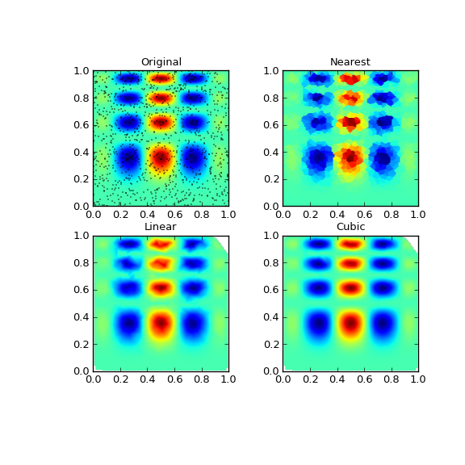

scipy.interpolate.griddata¶
- scipy.interpolate.griddata(points, values, xi, method='linear', fill_value=nan)[source]¶
Interpolate unstructured N-dimensional data.
New in version 0.9.
Parameters : points : ndarray of floats, shape (N, ndim)
Data point coordinates. Can either be an array of size (N, ndim), or a tuple of ndim arrays.
values : ndarray of float or complex, shape (N,)
Data values.
xi : ndarray of float, shape (M, ndim)
Points at which to interpolate data.
method : {‘linear’, ‘nearest’, ‘cubic’}, optional
Method of interpolation. One of
- nearest
return the value at the data point closest to the point of interpolation. See NearestNDInterpolator for more details.
- linear
tesselate the input point set to n-dimensional simplices, and interpolate linearly on each simplex. See LinearNDInterpolator for more details.
- cubic (1-D)
return the value determined from a cubic spline.
- cubic (2-D)
return the value determined from a piecewise cubic, continuously differentiable (C1), and approximately curvature-minimizing polynomial surface. See CloughTocher2DInterpolator for more details.
fill_value : float, optional
Value used to fill in for requested points outside of the convex hull of the input points. If not provided, then the default is nan. This option has no effect for the ‘nearest’ method.
Examples
Suppose we want to interpolate the 2-D function
>>> def func(x, y): >>> return x*(1-x)*np.cos(4*np.pi*x) * np.sin(4*np.pi*y**2)**2
on a grid in [0, 1]x[0, 1]
>>> grid_x, grid_y = np.mgrid[0:1:100j, 0:1:200j]
but we only know its values at 1000 data points:
>>> points = np.random.rand(1000, 2) >>> values = func(points[:,0], points[:,1])
This can be done with griddata – below we try out all of the interpolation methods:
>>> from scipy.interpolate import griddata >>> grid_z0 = griddata(points, values, (grid_x, grid_y), method='nearest') >>> grid_z1 = griddata(points, values, (grid_x, grid_y), method='linear') >>> grid_z2 = griddata(points, values, (grid_x, grid_y), method='cubic')
One can see that the exact result is reproduced by all of the methods to some degree, but for this smooth function the piecewise cubic interpolant gives the best results:
>>> import matplotlib.pyplot as plt >>> plt.subplot(221) >>> plt.imshow(func(grid_x, grid_y).T, extent=(0,1,0,1), origin='lower') >>> plt.plot(points[:,0], points[:,1], 'k.', ms=1) >>> plt.title('Original') >>> plt.subplot(222) >>> plt.imshow(grid_z0.T, extent=(0,1,0,1), origin='lower') >>> plt.title('Nearest') >>> plt.subplot(223) >>> plt.imshow(grid_z1.T, extent=(0,1,0,1), origin='lower') >>> plt.title('Linear') >>> plt.subplot(224) >>> plt.imshow(grid_z2.T, extent=(0,1,0,1), origin='lower') >>> plt.title('Cubic') >>> plt.gcf().set_size_inches(6, 6) >>> plt.show()
